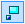
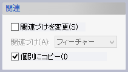
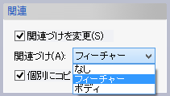
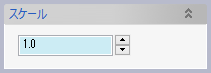

 コピースケール
操作方法
パラメータの入力が整うとコピー要素のプレビューが表示されます。要素の確認後、OKボタンで実行します。
パラメータ
対象要素

コピーする要素(データム、カーブ、シートボディ、ソリッドボディ),
コピーで作成される要素数を設定します。
関連
 
「関連づけを変更」をチェックすると、コピー元要素との関連づけの方法を変更できます。既定値は「フィーチャー」です。関連づけを「なし」以外にすると、パターンフィーチャーが作成され、コピー要素がコピー元の変更に追従するようになります。
(スケッチモード(2D,3D)では関連は設定できません。)
「個別にコピー」をチェックすると、複数の要素を一度にコピーしても、ひとつひとつ別々に選んでコピーした場合と同じ結果になります。チェックがOFFだと、選択した要素はひとまとまりのものとして扱われ、コピー時に入力したパラメータはすべてのコピー間で共有されます。
スケール

スケールの倍率を設定します。